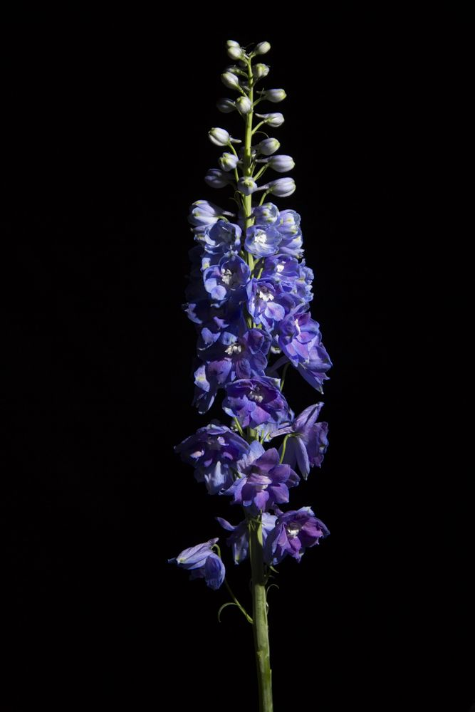

Lamiaceae
Lavender
Lavender is a flowering plant in the mint family. Its essential oil is widely used in aromatherapy, and it has been cultivated since ancient Egyptian times.

Observe the beauty of Liliaceae family
The Liliaceae family includes some of the most popular garden flowers in the world. Tulips from this family once caused "Tulip Mania" in the 1630s Netherlands, where single bulbs sold for more than a house.
VIEW DETAIL